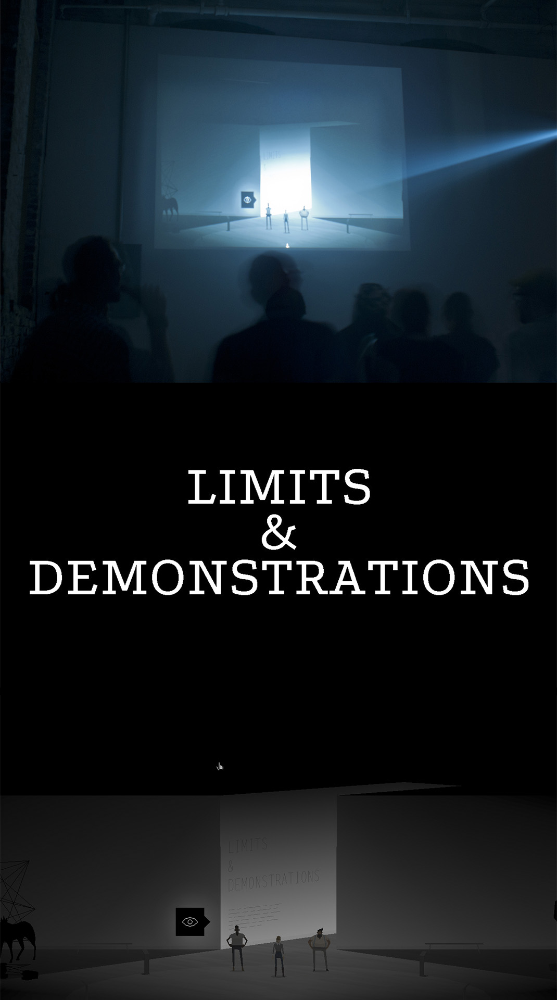
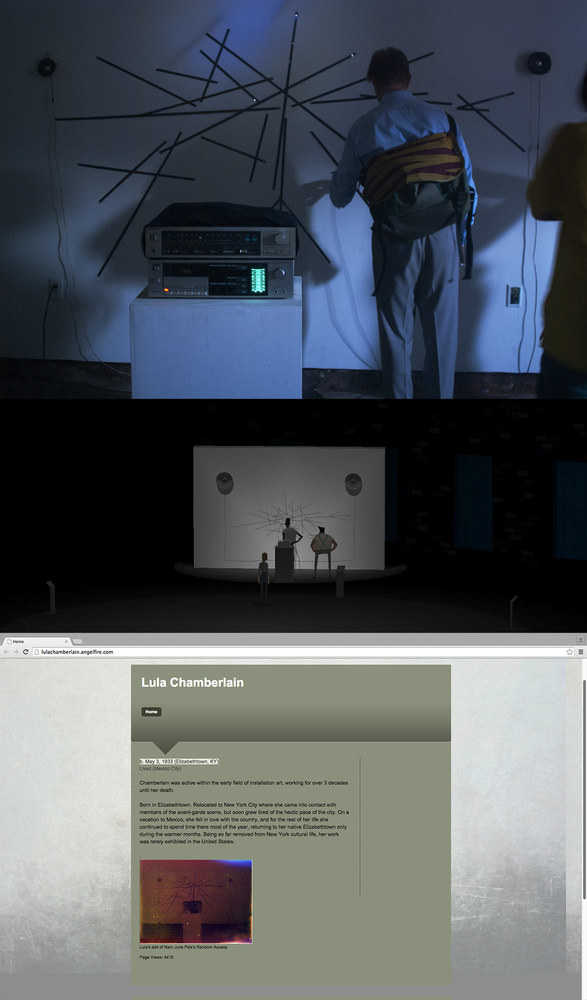
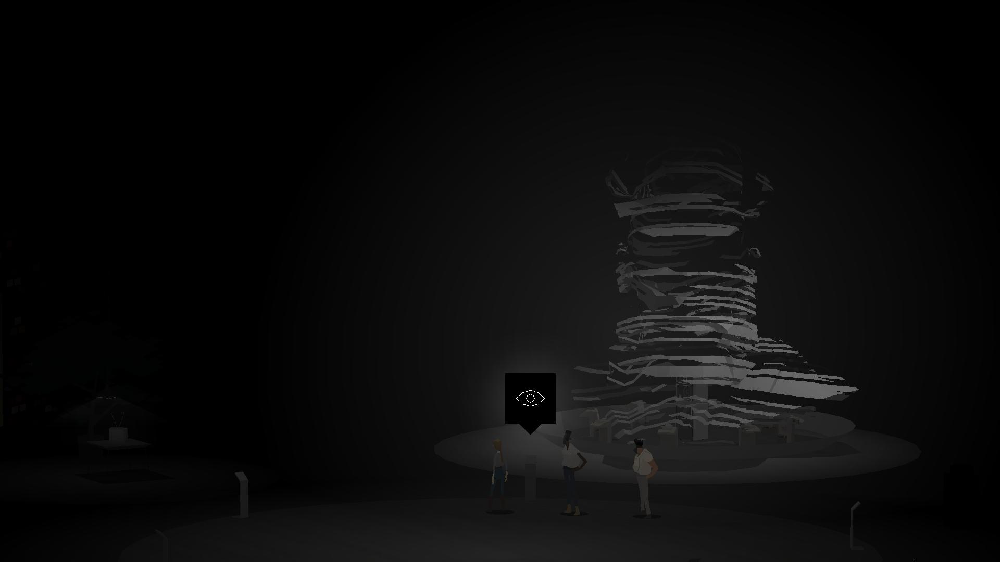
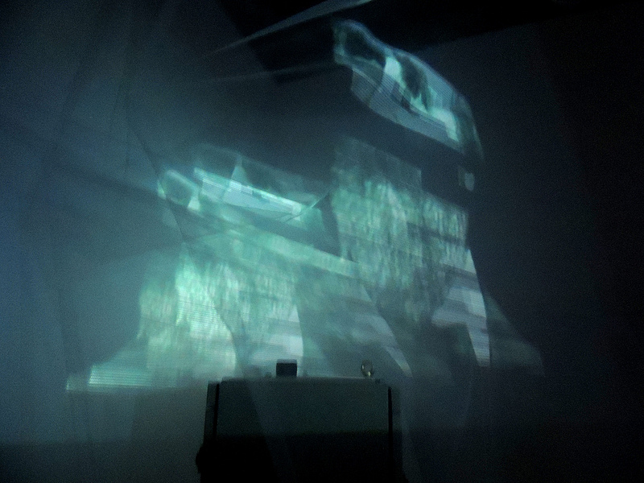
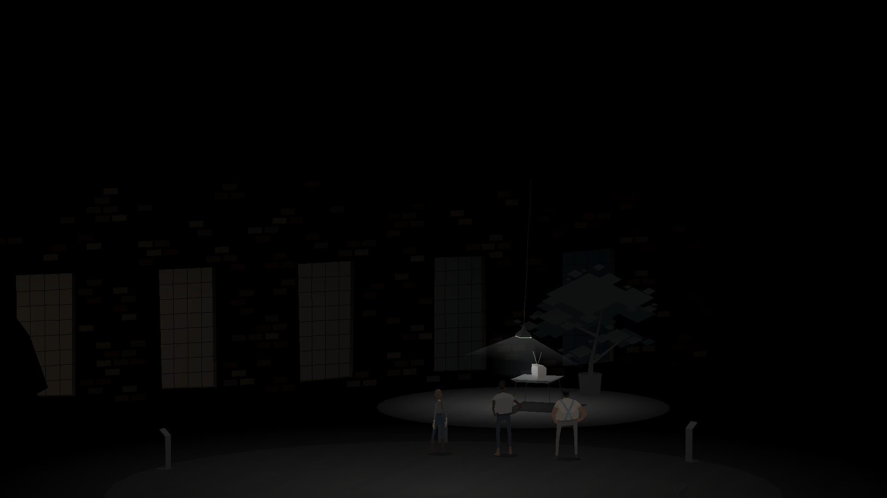
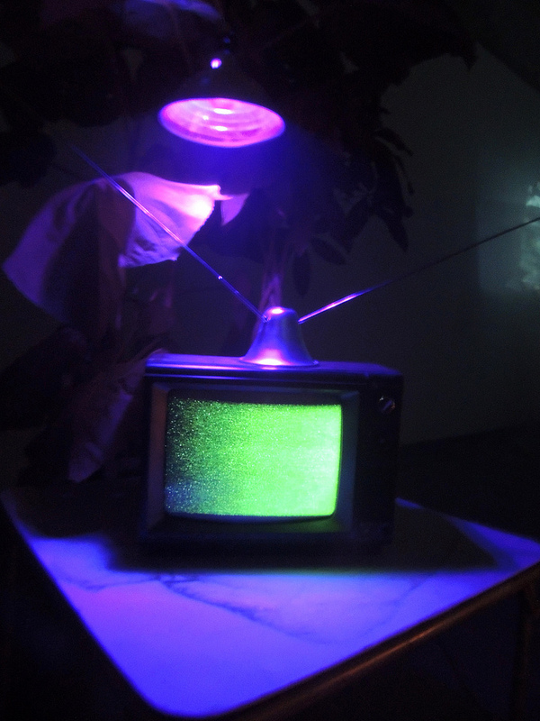

Little Berlin presents Limits and Demonstrations: A Lula Chamberlain Retrospective, marking the first major posthumous showcase of the little-known pioneering new media installation artist Lula Chamberlain’s work in over twenty years. This groundbreaking exhibition features a virtual museum game presented in a cinema inside the gallery as well as a physical gallery exhibition retrospective.
Chamberlain was a contemporary of Nam June Paik, John Cage and other avant-garde new media artists. Because her works were never successfully exhibited in public and due to her choice to relocate to Mexico she is not widely known, even amongst the artworld.
The exhibition consists of two parts. Visitors first enter a theater where they collectively play a digital videogame that is a virtual museum environment where Chamberlain’s artworks are shown in their idealized forms. The virtual museum was created by the game development company Cardboard Computer, directed by Jake Elliott, Tamas Kemenczy and Ben Babbitt.
There is a beauty to the virtual museum as the original works share a confounding legacy that they were never successfully displayed in their debut exhibitions as they were nearly impossible to install at the time. Galleries and museums balked at the scale, power requirements, and highly-skilled labor involved in maintaining Chamberlain’s works for display. Some of their debuts collapsed under the weight of logistics. The second part of the gallery exhibition at Little Berlin consists of the actual artworks on loan from collectors, artists, various museums and archives in Mexico and the United State as well as recreated works based on the artist’s original plans where the original has been lost.
Some of the works on display are damaged from deterioration or neglect. One of the most exciting works on display includes the artist’s piece Overdubbed Nam June Paik installation, in the style of Edward Packer in which Chamberlain, inspired by Robert Rauschenberg’s Erased De Kooning drawing overdubbed her own audio onto a Nam June Paik cassette tape installation work.
The degraded installations stand in stark contrast to their idealized forms displayed in the videogame retrospective that shows the strength of the artist’s vision. The pursuit of this exhibition of Chamberlain’s work helps finally bring attention to this neglected but important new media artist. It is hoped that this exhibition is just the first of many to come.




